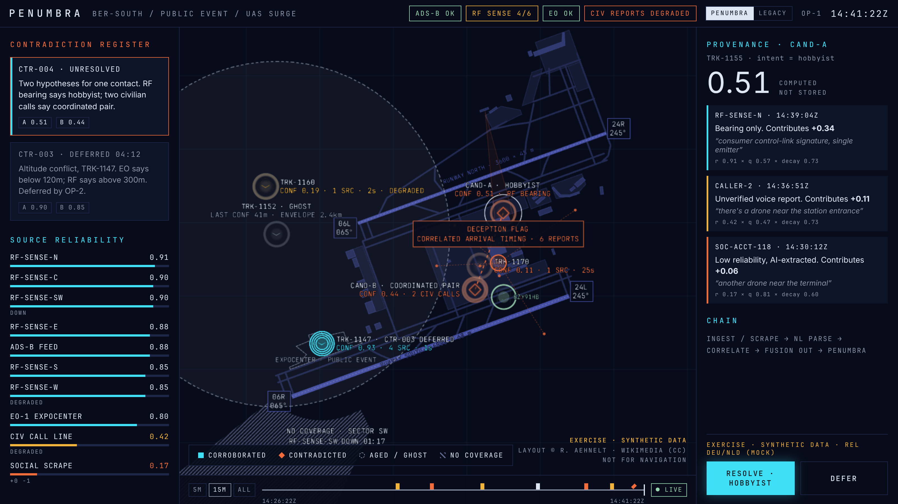
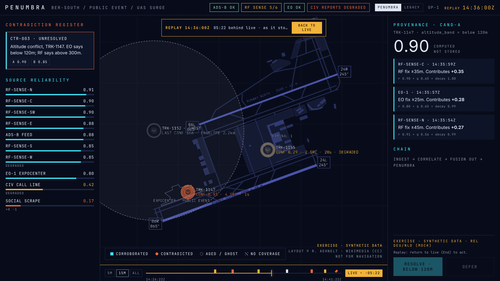
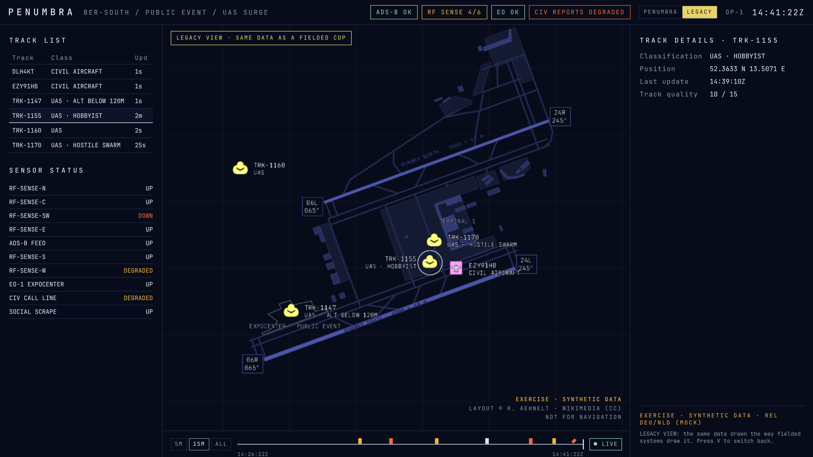
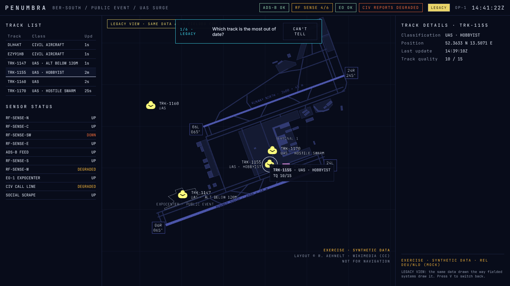
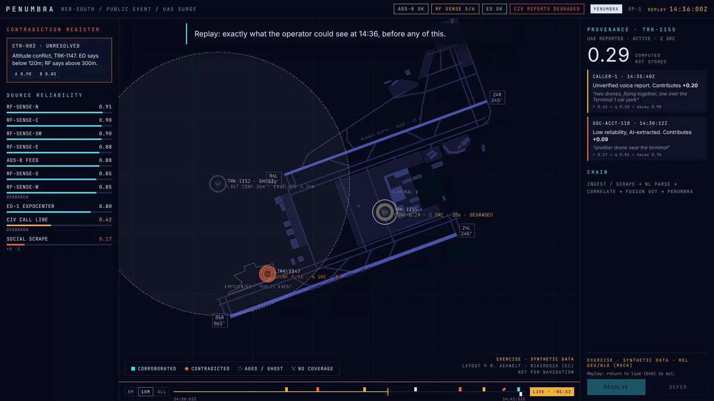

PENUMBRA is a confidence and decision-support layer for the common operational picture. It sits above sensor fusion and draws what fielded pictures leave out: how sure we are, how old the information is, where it came from, where sources disagree, and where we cannot see at all.
Every contact shows how much evidence stands behind it, and every number breaks down into the sources that make it up.
When sources disagree, both readings stay on screen until an operator decides. Nothing is averaged away.
"Nothing there" and "we cannot see there" look different. Stale contacts age visibly instead of looking current.
PENUMBRA runs on a normal laptop. It needs no internet connection once installed, no map tiles and no cloud service.
npm install -g pnpm).From the penumbra folder, run each line separately:
pnpm install # once, and after every update pnpm dev # feed server + client
Open http://127.0.0.1:5173. Playback starts at 14:38:22; the moment from the pitch deck (slide 7) arrives at 14:41:22, three minutes in. After about 40 seconds the RF reading arrives and contradiction CTR-004 appears.
Feed server and client together. The server is the single source of truth: every client sees the same picture, decisions go into its append-only log, and session logs are stored.
The client alone. With no server it plays the scenario in the browser. Everything works, including decisions; session logs are kept for download. Good for travelling demos.
&&: run commands one per line. If PowerShell refuses to run npm or pnpm ("running scripts is disabled"), run Set-ExecutionPolicy -Scope CurrentUser RemoteSigned once, or use npm.cmd and pnpm.cmd instead.Ctrl + C in the terminal stops everything. The ⟲ button in the header restarts the scenario from 14:38:22; Space pauses and resumes; the speed menu runs it at up to 16×.
The picture in the middle, what needs a decision on the left, the evidence behind the selected item on the right, time along the bottom.
A fielded picture draws a confirmed track and an unverified report with the same symbol. PENUMBRA draws how much evidence stands behind each contact.
TRK-1147 over the ExpoCenter: four independent sensors agree, confidence 0.93.
TRK-1160: one degraded sensor, confidence 0.19. Same symbol type, very different picture.
| Property | Means | How to read it |
|---|---|---|
| Ring count | Independent sources | One ring per independent source, up to four. Many reports from one sensor still count as one. |
| Edge sharpness | Confidence | Crisp edges mean high confidence; edges blur as confidence falls. |
| Colour strength | Confidence | Full colour when confident, fading towards grey when not. The symbol fades too. |
| Colour | Meaning |
|---|---|
| Cyan | Corroborated: at least two independent sources and confidence of at least 0.6. |
| Orange | An unresolved contradiction, or a deception flag. Needs attention. |
| Amber | The strongest source behind the contact is degraded. |
| Grey | A ghost (no recent fix), or a single weak source. |
| Green | Civil aircraft reporting by transponder (ADS-B). Context, labelled small. |
Each report counts by source reliability × report quality × age decay. Each independent source gets one vote: its strongest report. The votes combine like independent chances, so agreeing sources compound and one weak report stays weak. The provenance panel shows each source's share, and the shares always add up to the number on screen.
When fixes stop (after 30 s for a small drone), the contact becomes a ghost: a dashed symbol inside a dashed area showing where it is likely to be now. The area grows with time. A faint outer ring marks the furthest it could physically have flown. Ghosts stay for an hour, labelled with the age of the last fix.
When sources disagree about a contact whose position is uncertain, each reading is drawn as a hollow orange diamond where its evidence puts it, linked by a dashed line: CAND-A (hobbyist, from an RF bearing) and CAND-B (coordinated pair, from two callers). A wedge marks a bearing-only report: the sensor knows the direction, not the distance. A well-tracked contact with an attribute conflict keeps one symbol and a tag, e.g. "TRK-1147 · CTR-003 DEFERRED".
| Plain ground | Covered by a working drone sensor. Empty means empty. |
| Dense hatch | A sensor that covered it is down, e.g. "NO COVERAGE · SECTOR SW". |
| Faint hatch | No drone sensor has ever covered it. |
| Amber tint | Only degraded sensors see here. |
Six or more low-reliability accounts reporting the same thing within 60 seconds, in one area, is not how independent witnesses behave. PENUMBRA raises a deception flag with lines to each report and counts the burst as one vote, not six: here the planted "swarm" scores 0.11 instead of 0.51. Nothing is deleted or marked false. The flag clears ten minutes after the last report.
Every disagreement between sources, newest first, written as a sentence: "Two hypotheses for one contact. RF bearing says hobbyist; two civilian calls say coordinated pair." Click a card to select its leading candidate.
| Status | Means |
|---|---|
| UNRESOLVED | Both readings live, no decision yet. |
| DEFERRED 04:12 | An operator parked it; the timer counts up. |
| RESOLVED · HOBBYIST | Decided; the rejected reading is struck through. |
| REOPENED | Fresh evidence for a rejected reading arrived after the decision: decide again. |
| LAPSED | Support for all but one reading has decayed. |
How trustworthy each source has proven. It starts from a prior, moves up when police confirm a report and down when one is shown false. Bars are cyan from 0.75, amber from 0.40, orange below. Notes show DOWN, DEGRADED and the verdict count (+1 −0). After the first resolution, OPERATOR appears too: decisions are evidence, so they carry a reliability.
The big number is the selected item's confidence, computed, not stored: recalculated from the evidence every time you look. Below it, one card per source:
RF-SENSE-N · 14:39:04ZChain shows the processing path, e.g. INGEST / SCRAPE → NL PARSE → CORRELATE → FUSION OUT → PENUMBRA. The releasability marking sits above the buttons.
Select a candidate, on the map or through its register card, and decide. Decisions go into the append-only log with your operator id and the time; nothing can be edited afterwards.
If fresh, live evidence for a rejected reading arrives after your decision, the contradiction reopens and returns to the register: the system does not quietly overrule new evidence. In the scenario, resolve CTR-004 before 14:39:10 and the third caller ("two of them, one following the other") reopens it.
| Situation | Why |
|---|---|
| Whole contact selected, not a candidate | Resolve needs a reading: select CAND-A or CAND-B. |
| No open contradiction on the contact | Nothing to decide. |
| Replay mode | Decisions are taken at the live picture only. Press End to return. |
| Already resolved, already deferred | The server and the offline player refuse it with the same message. |
?op=OP-3.Drag the timeline to any past moment and the picture is rebuilt exactly as it stood then, including the decisions taken up to that moment and none after.

Use it in after-action review: what could the operator see at the moment they decided?
Press V (or LEGACY in the header) to redraw the same moment by the rules fielded systems follow. It is a fair copy, built as a baseline for comparison, not a strawman.

| Fielded behaviour | What you see in LEGACY |
|---|---|
| One fused track per contact | CAND-A and CAND-B become one TRK-1155, labelled only "HOBBYIST". |
| Fusion picks a best estimate | The competing reading disappears; there is no contradiction register. |
| Uniform standard symbols | TRK-1160 (0.19, one degraded sensor) looks identical to TRK-1147 (0.93, four sensors). |
| No ageing, then a drop timer | Tracks look current until dropped after 5 minutes; the 41-minute ghost is gone. |
| No coverage, no adjudication | No blind sector; the planted posts appear as an ordinary "UAS · HOSTILE SWARM" track. |
| Track quality as metadata | Available as a number (e.g. 14 / 15) in track details, when you click a track. Not on the map. |
The panels change to what fielded systems show: a track list with update times, sensor status, and track details. Nothing a fielded system shows is hidden; nothing it lacks is added.
A six-question test that measures how quickly and correctly people read the picture in each view. The results table is the evidence for the DIANA submission.

Answers are clicks on the map, timed from the moment the picture is painted. "Can't tell" counts as wrong.
pnpm dev so answers are stored on the server.pnpm probe:report.pnpm probe:report # ./sessions pnpm probe:report -- a.jsonl # downloads
Prints a table per view and per question: answers, % correct, median time.
A captioned walkthrough that plays itself: for stands, briefings and the supplementary video.

pnpm demo # opens the browser pnpm demo:record # saves a video
The demo restarts the scenario and plays the scripted ending: police confirm the hobbyist drone, OP-1 resolves CTR-004. Keys, transport and the view switch are locked so a stray key cannot derail it. Add ?capture=1080p to render at exactly 1920 × 1080 for a screen recorder such as OBS.
pnpm demo:record records in real time to recordings/. Without a graphics chip (cloud machines, some virtual machines) the frame rate is too low for a usable video.
| 14:38:23 | The event, the surge of reports |
| 14:38:40 | TRK-1147: four sensors, four rings |
| 14:39:06 | CAND-A vs CAND-B, neither averaged away |
| 14:39:40 | TRK-1152, last seen 41 minutes ago |
| 14:40:07 | A sensor fails; sector SW goes blind |
| 14:41:02 | Six accounts, counted as one vote |
| 14:41:12 | 0.51 = 0.34 + 0.11 + 0.06 |
| 14:41:24 | Seven seconds of LEGACY |
| 14:41:34 | Police confirm; OP-1 resolves |
| after end | Replay of 14:36, closing line |
Captions and timing live in apps/client/src/demo/director.ts; changing a caption is a one-line text edit.
| Space | Play / pause |
| R | Resolve the selected candidate |
| D | Defer the selected contradiction |
| V | Switch PENUMBRA / LEGACY |
| ← → | Replay 5 s back / forward |
| Shift + ← → | Replay 1 min back / forward |
| End Esc | Back to live |
penumbra/)pnpm dev | Feed server and client |
pnpm client | Client only (offline fallback) |
pnpm feed | Feed server only (--speed, --manual, --paused) |
pnpm demo | Captioned walkthrough |
pnpm demo:record | Record the walkthrough |
pnpm probe:report | Legibility probe results |
pnpm frame | The key frame as text |
pnpm shot | Screenshot to docs/screens/ |
pnpm check | Type check and all tests |
pnpm smoke | Live end-to-end browser test |
pnpm build | Static client (runs offline) |
pnpm manual | Rebuild this manual |
Add to the address, e.g. 127.0.0.1:5173/?view=legacy&speed=4
?t=14:41:22 | Offline, frozen at a moment |
?mode=offline | Play in the browser, no server |
?speed=4 | Playback speed (up to 16) |
?op=OP-3 | Operator id for decisions |
?view=legacy | Open in the LEGACY view |
?replay=14:36:00 | Open replaying a moment |
?scripted | Offline: keep the scripted decisions |
?probe | Legibility probe |
?demo | Captioned walkthrough |
?capture=1080p | Exactly 1920 × 1080, for recording |
?stress=500&stats | 500 extra drones and an fps meter |
?ws=… | Feed address (default: same machine) |
?stress=500&stats&speed=4 on the demo laptop and read the fps meter while it plays. The target is 60 fps with 500 contacts.| Symptom | Fix |
|---|---|
| "The token '&&' is not a valid statement separator" | Windows PowerShell 5.1: run the commands one per line. |
| "npm / pnpm is not recognized" | Install Node.js LTS from nodejs.org, open a new terminal, then npm install -g pnpm. |
| "running scripts is disabled on this system" | Set-ExecutionPolicy -Scope CurrentUser RemoteSigned, or use npm.cmd / pnpm.cmd. |
| Port 5173 or 8787 already in use | Close the other program, or a previous PENUMBRA still running (Ctrl+C in its terminal). |
| Header says OFFLINE, not LIVE FEED | The feed server is not running: use pnpm dev, not pnpm client. |
| Map is slow or jerky | No graphics acceleration (virtual machine, remote desktop). Use a laptop with a graphics chip. |
| Resolve does nothing | Select a candidate (CAND-A / CAND-B), and make sure you are not in replay. |
sessions/*.jsonl | Every operator interaction, one file per browser session |
/log.jsonl | The server's append-only picture log (address of the feed server) |
recordings/ | Demo videos |
docs/ | Design notes per milestone, screenshots, this manual |
scenarios/*.yaml | The scenario, editable without code |
Together, the session log and the picture log let you replay exactly what an operator saw next to what they did and when.
| Confidence | How much evidence stands behind a contact or reading, 0 to 1. |
| Origin | An independent source: one sensor, one caller, one account. |
| Hypothesis | One reading of a contact (e.g. intent = hobbyist), labelled CAND-A, CAND-B. |
| Contradiction | Two readings with live support at once (CTR-nnn). |
| Ghost | A contact without a recent fix, drawn as a growing likely area. |
| Provenance | The sources behind a number, with their shares and processing chain. |
| Track quality | LEGACY's 0–15 number, shown only in track details. |
The scenario, sensors, callsigns, callers and social accounts are invented. Correlation of reports to contacts is scripted. Use the screens to explain the concept, not to describe a real event.
The airport layout is traced from "Airport Layout 08/2026" by R. Aehnelt via Wikimedia Commons (Creative Commons), credited on screen. Confirm the exact licence before any public use: a share-alike licence would apply to the traced map data. Not for navigation.
A prototype for the NATO DIANA 2028 challenge call. No accreditation, no real sensor feeds, no access control. Do not use operationally or with real data.
60 fps with 500 contacts is not yet measured on target hardware. Replaying very long sessions is slow. Some timeline marks overlap in the widest window. The probe has been tested by automation only, not with participants.